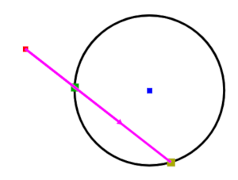
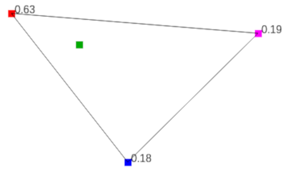
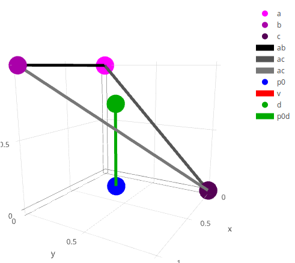

Mini Assignment 1: Geometric Primitives (44 Points)
Part 1
- Task 1: Vector Projection (5 Points)
- Task 2: Angle Computation (5 Points)
- Task 3: Triangle Area computation (5 Points)
- Task 4: Point Above Or Below Plane? (5 Points)
Part 2
- Task 5: Ray Intersect Sphere (8 Points)
- Task 6: Barycentric Coordinates (8 Points)
- Task 7: Ray Intersect Triangle (8 Points)
Overview
The purpose of this assignment is to get students hands on practice with fundamental concepts from vector math and also to introduce them to Javascript and the glmatrix library (version 3.1), and particularly the vec3 class. Students will implement a series of mini algorithms using vector concepts that are commonly used in larger geometry systems. These are real world primitive operations that pop up all the time in graphics, robotics, and physics simulations, to name a few of the many application areas. For a large number students, this will serve as an introduction to translating mathematics into code, which is an extremely useful but sometimes underrepresented skill.
This assignment is split up into two parts to keep everyone on track. You will have five days to complete each part. It is highly recommended that you move onto the second part as soon as you finish the first part, as the second part is conceptually trickier.
Getting Started
To get started, check out or download the code in the two github repositories for each part at
- https://github.com/Ursinus-CS476-F2019/Mini1_GeometricPrimitives_Part1
- https://github.com/Ursinus-CS476-F2019/Mini1_GeometricPrimitives_Part2
GeomPrimitives.js. All of the .html files are GUI front end debugging tools for you to check to make sure your code is working properly, as will be described in the individual tasks. I have included a minified version of the glmatrix library which contains the vec3 class for manipulating 3D vectors, as well as a minified version of the plot.ly library for 3D plotting (which I used to help create some GUI visualizations to help you debug...no need to worry about it unless you're interested).
Collaboration
This is an individual assignment, so all code must be completely your own. However, feel free to post questions on Microsoft Teams and to work with each other on the conceptual math part. Also, if you need help debugging, it is fine to show each other Javascript code that you develop for that purpose (just not code that you write for the actual implementations in GeomPrimitives.js). If you are unsure if something is allowed, please ask.
Tips
-
Be sure to carefully reference the documentation of the vec3 class as you go along. Be sure to allocate new vector objects with
vec3.create()orvec3.fromValues()before storing results in them or using them in any way.
-
Since this is our first Javascript assignment, don't forget to hit
F12to bring up the powerful debugging suite, including the console and the ability to set breakpoints. Use logging in the console withconsole.log("Test strings" + x + whatever)to output intermediate values to the debug console.
- Ask questions on Microsoft Teams as you are going along and get stuck. Javascript is very "loose" with declarations and types, so there are many things that can happen that wouldn't happen in other languages. One of the most common errors I have personally made is accidentally re-using variable names. This is particularly bad when the original variable was an object and the new variable is a numerical value, and then I try to use the numerical value as if it were an object. This will commonly manifest itself as some kind of "undefined" variable if you log it to the console.
Submission Instructions
You will submit two versions ofGeometricPrimitives.js to Canvas when you are finished. The first version will contain implementations of tasks 1-4 (due Wednesday 9/4 at 11:59PM), and the second version will contain implementations of tasks 5, 6, and 7 (due Friday 9/13). Please also submit a README.txt file with both submissions with the following information each time:
- Your name
- Approximately how many hours it took you to finish this assignment (I will not judge you for this at all...I am simply using it to gauge if the assignments are too easy or hard)
- Your overall impression of the assignment. Did you love it, hate it, or were you neutral? One word answers are fine, but if you have any suggestions for the future let me know.
- Any other concerns that you have. For instance, if you have a bug that you were unable to solve but you made progress, write that here. The more you articulate the problem the more partial credit you will receive (fine to leave this blank)
Study this code carefully and post on Microsoft Teams if you have any questions
Part 1 (Due Wednesday 9/4 at 11:59PM)
Task 1: Vector Projection (5 Points)
Write functions to use the dot product formulas to perform vector projection, using the vec3 class. You will write on function for parallel projection and one function for perpendicular projection of vectors (what's left over after parallel projection)Code to write:
projVector(u, v) and projPerpVector(u, v) in GeomPrimitives.jsGui Tester:
projection.html- Write the code for parallel projection first, then see if you can call that function to help with perpendicular projection.
Task 2: Angle Computation (5 points)
Given points a, b and c, compute the angle in degrees between b and c with respect to a, as shown in the picture below
Code to write: Fill in
getAngle(a, b, c) in GeomPrimitives.jsGui Tester:
angle.htmlTask 3: Triangle Area Computation (5 points)
Use the fact that the magnitude of the cross product of two vectors is the area of the parallelogram spanned by those two vectors to compute the area of a triangle enclosed by three points in 3D.Alternatively, you can use the dot product and the fact that
\[ \sin(\theta) = \sqrt{ 1 - \cos^2(\theta) } \]
(this is simply the pythagorean theorem on unit triangles)Code to write: Fill in
getTriangleArea(a, b, c) in GeomPrimitives.jsGui Tester:
area.html- Test this with some examples you know in the plane (z=0) where you can apply the formula (1/2*base*height) to make sure it makes sense
Task 4: Point Above Or Below Plane? (5 points)
Given three points a, b, and c, determine if the point d is above or below the plane determined by the triangle /\abc, with the plane normal determined by the right hand rule traversing the points counter-clockwise. Return +1 if the point is above, -1 if the point is below, or 0 of the point lies on the plane.In the picture below, point d is above the plane determined by abc in counter-clockwise order using the right hand rule:

Code to write: Fill in
getAboveOrBelow(a, b, c, d) in GeomPrimitives.jsGui Tester:
aboveOrBelow.html- Hint: Use the cross product between two vectors to determine the plane normal, and verify conceptually with the right hand rule to make sure it points in the direction consistent with counter-clockwise specification of abc before you write your code. Then use the sign of the dot product between that normal and some other vector that involves d
Part 2 (Due Friday 9/13 11:59PM)
This part of the assignment will get you to warm up with some very important tasks that you will re-implement in GLSL when you go to do your ray tracer. Click here to visit the repository that has the skeleton code for this part.
Note: Unit tests have shipped with this part of the assignment. Some of the default outputs actually make it look like you're passing, but be careful; the default output is actually what you're supposed to do for some of the corner cases.
Task 5: Ray Intersect Sphere (8 points)
Given a vector described by \[\vec{p_0} + t\vec{v} \]
and a sphere defined by a center vector c and a radius r, determine the intersection point of the ray and the sphere, if it exists (see API comments for more details on return types and corner cases).
Code to write: Fill in rayIntersectSphere(p0, v, c, r) in GeomPrimitives.js
Gui Tester: rayCircle.html for 2D only (you should look at the unit tests for 3D cases). A screenshot of the GUI on a working implementation is shown below:

-
Hint: The
vec3.scaleAndAddfunction invec3may save you time when you go to perform an operationp0 + tv
Task 6: Barycentric Coordinates (8 points)
Given three vertices a, b, c on a triangle and another point p, determine the 3 barycentric coordinates of p with respect to a, b, c (see API comments for more details on return types and corner cases).
Code to write: Fill in getBarycentricCoords(a, b, c, p) in GeomPrimitives.js
Gui Tester: Barycentric.html for 2D only (you should look at the unit tests for 3D cases). A screenshot of the GUI on a working implementation is shown below:

- Hint: Use the area ratio method, it is by far the easiest technique, and it relies on code you already wrote to compute the area of a 3D triangle! (See Figure 2.38 in section 2.7.1 of the textbook)
Task 7: Ray Intersect Triangle (8 points)
Given a vector described by \[\vec{p_0} + t\vec{v} \]
and a triangle determined by three vertices a, b, c, determine the intersection point of the ray and the triangle, if it exists (see API comments for more details on return types and corner cases).
Code to write: Fill in rayIntersectTriangle(p0, v, a, b, c) in GeomPrimitives.js
Gui Tester: rayTriangle.html. A screenshot of the GUI on a working implementation is shown below:

- Hint: Figure out the intersection point on the plane spanned by the triangle first (using "implicit form type 2" that we talked about in class), and then use a technique very similar to computing barycentric coordinates to figure out of that point is actually in the triangle.
-
Hint: The
vec3.scaleAndAddfunction invec3may save you time when you go to perform an operationp0 + tv